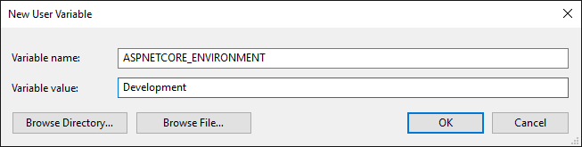

Working with multiple environments
By Steve Smith
ASP.NET Core provides support for controlling app behavior across multiple environments, such as development, staging, and production. Environment variables are used to indicate the runtime environment, allowing the app to be configured for that environment.
Development, Staging, Production
ASP.NET Core references a particular environment variable, ASPNETCORE_ENVIRONMENT to describe the environment the application is currently running in. This variable can be set to any value you like, but three values are used by convention: Development, Staging, and Production. You will find these values used in the samples and templates provided with ASP.NET Core.
The current environment setting can be detected programmatically from within your application. In addition, you can use the Environment tag helper to include certain sections in your view based on the current application environment.
Note: On Windows and macOS, the specified environment name is case insensitive. Whether you set the variable to Development or development or DEVELOPMENT the results will be the same. However, Linux is a case sensitive OS by default. Environment variables, file names and settings require case sensitivity.
Development
This should be the environment used when developing an application. It is typically used to enable features that you wouldn't want to be available when the app runs in production, such as the developer exception page.
If you're using Visual Studio, the environment can be configured in your project's debug profiles. Debug profiles specify the server to use when launching the application and any environment variables to be set. Your project can have multiple debug profiles that set environment variables differently. You manage these profiles by using the Debug tab of your web application project's Properties menu. The values you set in project properties are persisted in the launchSettings.json file, and you can also configure profiles by editing that file directly.
The profile for IIS Express is shown here:

Here is a launchSettings.json file that includes profiles for Development and Staging:
{
"iisSettings": {
"windowsAuthentication": false,
"anonymousAuthentication": true,
"iisExpress": {
"applicationUrl": "http://localhost:40088/",
"sslPort": 0
}
},
"profiles": {
"IIS Express": {
"commandName": "IISExpress",
"launchBrowser": true,
"environmentVariables": {
"ASPNETCORE_ENVIRONMENT": "Development"
}
},
"IIS Express (Staging)": {
"commandName": "IISExpress",
"launchBrowser": true,
"environmentVariables": {
"ASPNETCORE_ENVIRONMENT": "Staging"
}
}
}
}
Changes made to project profiles may not take effect until the web server used is restarted (in particular, Kestrel must be restarted before it will detect changes made to its environment).
Warning
Environment variables stored in launchSettings.json are not secured in any way and will be part of the source code repository for your project, if you use one. Never store credentials or other secret data in this file. If you need a place to store such data, use the Secret Manager tool described in Safe storage of app secrets during development.
Staging
By convention, a Staging environment is a pre-production environment used for final testing before deployment to production. Ideally, its physical characteristics should mirror that of production, so that any issues that may arise in production occur first in the staging environment, where they can be addressed without impact to users.
Production
The Production environment is the environment in which the application runs when it is live and being used by end users. This environment should be configured to maximize security, performance, and application robustness. Some common settings that a production environment might have that would differ from development include:
Turn on caching
Ensure all client-side resources are bundled, minified, and potentially served from a CDN
Turn off diagnostic ErrorPages
Turn on friendly error pages
Enable production logging and monitoring (for example, Application Insights)
This is by no means meant to be a complete list. It's best to avoid scattering environment checks in many parts of your application. Instead, the recommended approach is to perform such checks within the application's Startup class(es) wherever possible
Setting the environment
The method for setting the environment depends on the operating system.
Windows
To set the ASPNETCORE_ENVIRONMENT for the current session, if the app is started using dotnet run, the following commands are used
Command line
set ASPNETCORE_ENVIRONMENT=Development
PowerShell
$Env:ASPNETCORE_ENVIRONMENT = "Development"
These commands take effect only for the current window. When the window is closed, the ASPNETCORE_ENVIRONMENT setting reverts to the default setting or machine value. In order to set the value globally on Windows open the Control Panel > System > Advanced system settings and add or edit the ASPNETCORE_ENVIRONMENT value.


web.config
See the Setting environment variables section of the ASP.NET Core Module configuration reference topic.
Per IIS Application Pool
If you need to set environment variables for individual apps running in isolated Application Pools (supported on IIS 10.0+), see the AppCmd.exe command section of the Environment Variables <environmentVariables> topic in the IIS reference documentation.
macOS
Setting the current environment for macOS can be done in-line when running the application;
ASPNETCORE_ENVIRONMENT=Development dotnet run
or using export to set it prior to running the app.
export ASPNETCORE_ENVIRONMENT=Development
Machine level environment variables are set in the .bashrc or .bash_profile file. Edit the file using any text editor and add the following statment.
export ASPNETCORE_ENVIRONMENT=Development
Linux
For Linux distros, use the export command at the command line for session based variable settings and bash_profile file for machine level environment settings.
Determining the environment at runtime
The IHostingEnvironment service provides the core abstraction for working with environments. This service is provided by the ASP.NET hosting layer, and can be injected into your startup logic via Dependency Injection. The ASP.NET Core web site template in Visual Studio uses this approach to load environment-specific configuration files (if present) and to customize the app's error handling settings. In both cases, this behavior is achieved by referring to the currently specified environment by calling EnvironmentName or
IsEnvironment on the instance of IHostingEnvironment passed into the appropriate method.
Note
If you need to check whether the application is running in a particular environment, use env.IsEnvironment("environmentname") since it will correctly ignore case (instead of checking if env.EnvironmentName == "Development" for example).
For example, you can use the following code in your Configure method to setup environment specific error handling:
public void Configure(IApplicationBuilder app, IHostingEnvironment env)
{
if (env.IsDevelopment())
{
app.UseDeveloperExceptionPage();
app.UseDatabaseErrorPage();
app.UseBrowserLink();
}
else
{
app.UseExceptionHandler("/Home/Error");
}
If the app is running in a Development environment, then it enables the runtime support necessary to use the "BrowserLink" feature in Visual Studio, development-specific error pages (which typically should not be run in production) and special database error pages (which provide a way to apply migrations and should therefore only be used in development). Otherwise, if the app is not running in a development environment, a standard error handling page is configured to be displayed in response to any unhandled exceptions.
You may need to determine which content to send to the client at runtime, depending on the current environment. For example, in a development environment you generally serve non-minimized scripts and style sheets, which makes debugging easier. Production and test environments should serve the minified versions and generally from a CDN. You can do this using the Environment tag helper. The Environment tag helper will only render its contents if the current environment matches one of the environments specified using the names attribute.
<environment names="Development">
<link rel="stylesheet" href="~/lib/bootstrap/dist/css/bootstrap.css" />
<link rel="stylesheet" href="~/css/site.css" />
</environment>
<environment names="Staging,Production">
<link rel="stylesheet" href="https://ajax.aspnetcdn.com/ajax/bootstrap/3.3.6/css/bootstrap.min.css"
asp-fallback-href="~/lib/bootstrap/dist/css/bootstrap.min.css"
asp-fallback-test-class="sr-only" asp-fallback-test-property="position" asp-fallback-test-value="absolute" />
<link rel="stylesheet" href="~/css/site.min.css" asp-append-version="true" />
</environment>
To get started with using tag helpers in your application see Introduction to Tag Helpers.
Startup conventions
ASP.NET Core supports a convention-based approach to configuring an application's startup based on the current environment. You can also programmatically control how your application behaves according to which environment it is in, allowing you to create and manage your own conventions.
When an ASP.NET Core application starts, the Startup class is used to bootstrap the application, load its configuration settings, etc. (learn more about ASP.NET startup). However, if a class exists named Startup{EnvironmentName} (for example StartupDevelopment), and the ASPNETCORE_ENVIRONMENT environment variable matches that name, then that Startup class is used instead. Thus, you could configure Startup for development, but have a separate StartupProduction that would be used when the app is run in production. Or vice versa.
Note
Calling WebHostBuilder.UseStartup<TStartup>() overrides configuration sections.
In addition to using an entirely separate Startup class based on the current environment, you can also make adjustments to how the application is configured within a Startup class. The Configure() and ConfigureServices() methods support environment-specific versions similar to the Startup class itself, of the form Configure{EnvironmentName}() and Configure{EnvironmentName}Services(). If you define a method ConfigureDevelopment() it will be called instead of Configure() when the environment is set to development. Likewise, ConfigureDevelopmentServices() would be called instead of ConfigureServices() in the same environment.
Summary
ASP.NET Core provides a number of features and conventions that allow developers to easily control how their applications behave in different environments. When publishing an application from development to staging to production, environment variables set appropriately for the environment allow for optimization of the application for debugging, testing, or production use, as appropriate.